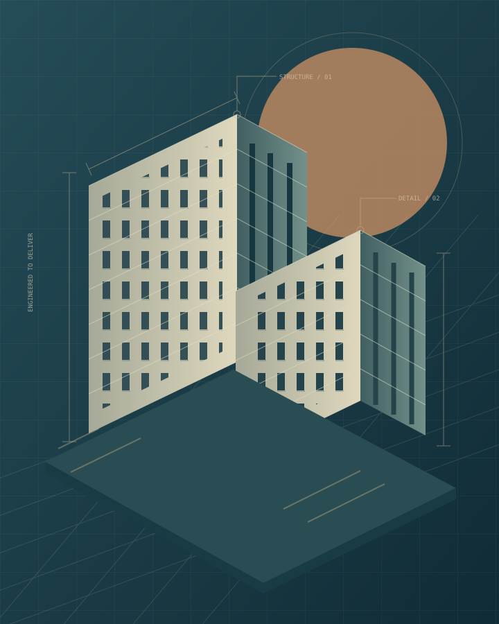

دبي، الإمارات العربية المتحدة
مدير مشروعات ومحافظ استثمارية إنشائية
خبرة هندسية.
رؤية تقود الإنجاز.
Asaad Sherifمن الرؤية إلى التسليم.

ASAAD SHERIFEST. 2003
هندسة مدنية · إدارة مشروعات
PLANNING / LEADERSHIP / DELIVERYنبني اليوم.
لنترك أثرًا يدوم.
20+عامًا من الخبرة
3B+درهم قيمة المحافظ الإنشائية
14مشروعًا مختارًا من السيرة الذاتية
UAEمشروعات حكومية وقطاع خاص
01 / نبذة مهنيةقيادة التفاصيل.
قيادة التفاصيل.
وإدراك الصورة الكاملة.
01
التعليم
02
العضويات المهنية
03
اللغات
02 / محفظة المشروعات
مشروعات بحجم الطموح.
مشروعات مختارة من السيرة الذاتية، بقيم العقود الواردة فيها.
لا توجد مشروعات في هذا التصنيف.
03 / مجالات الخبرةانضباط في الإدارة.
انضباط في الإدارة.
ثقة في التنفيذ.
04 / المسار المهنيمسيرة تبني
مسيرة تبني
على الخبرة.
من التصميم الإنشائي والمكتب الفني إلى قيادة المشروعات وتمثيل المالك.
05 / من أرض الواقع
المشروعات في الصورة.
جولة في المواد المرئية المرفقة. يبدأ تحميل الفيديو عند فتحه فقط.